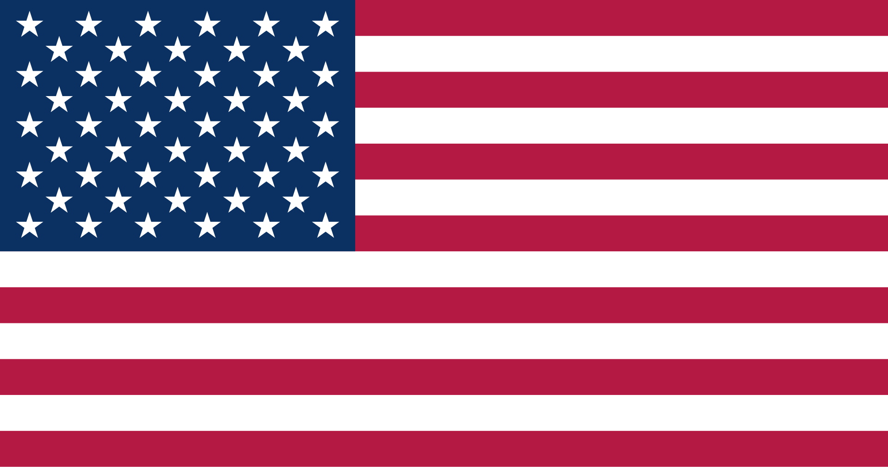
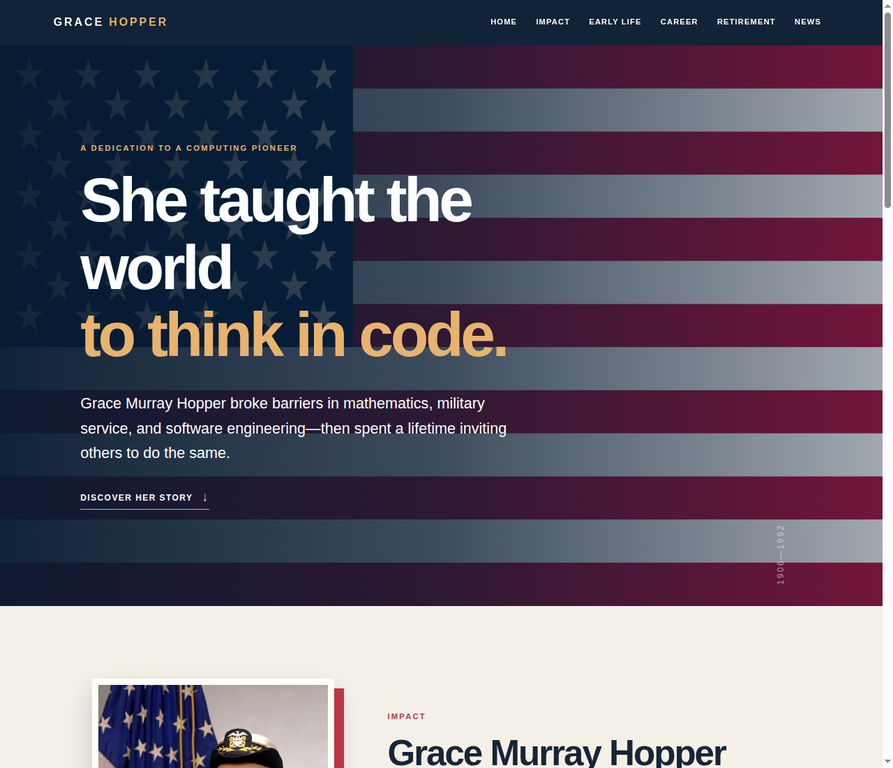
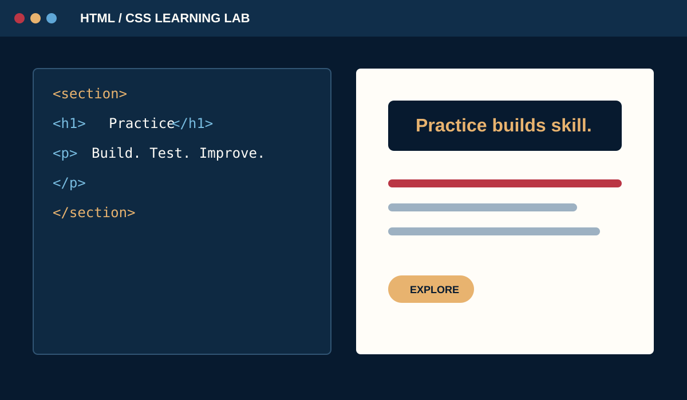

HTML
Semantic page structure, accessible navigation, links, media, and meaningful content organization.

HTML · CSS · Creative problem solving
A curious developer learning to turn ideas into clear, responsive, and meaningful web experiences.
01 · About me
I’m Adem Avşar, a developing web designer and front-end developer.
I enjoy learning how websites work from the ground up, writing clear HTML and CSS, and improving a page one detail at a time. My current focus is building accessible layouts, responsive interfaces, and projects that communicate an idea clearly.
This portfolio documents my progress—from experimenting with individual lines of code to publishing complete websites through GitHub.
Semantic page structure, accessible navigation, links, media, and meaningful content organization.
Responsive layouts, typography, color systems, spacing, hover states, and visual hierarchy.
Layouts that remain usable and readable across desktop, tablet, and mobile screen sizes.
Version control, commits, repository organization, and publishing finished work online.
Testing often, isolating problems, checking browser behavior, and improving code methodically.
Researching documentation and tutorials, then applying new ideas through practical projects.
A few projects that show how I practice design, content, and front-end fundamentals.

Featured project · 01
A responsive tribute site about Grace Murray Hopper, designed with a navy, red, and cream visual system and organized into clear content sections.
View repository ↗
Practice project · 02
A collection of small experiments used to understand spacing, typography, color, image sizing, hover effects, and responsive behavior.
View repository ↗04 · Contact
I’m continuing to grow through hands-on practice and new projects. You can follow my work and future updates on GitHub.
Visit my GitHub ↗